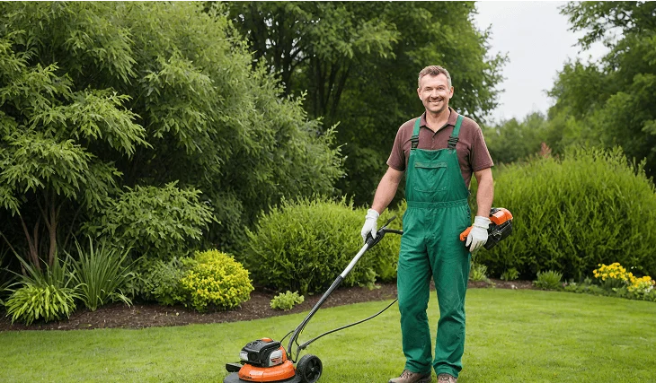
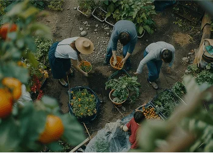

The Benefits of Gardening for Stress Relief and Mental Health
In today’s fast-paced world, finding moments of calm and connection with nature is more important than ever—especially for seniors. Gardening is a simple, rewarding way to reduce stress, improve mood, and promote mental well-being. Whether it’s tending to herbs on a balcony or caring for a backyard vegetable patch, interacting with plants encourages mindfulness and provides a sense of purpose, making it an ideal activity for enhancing overall mental health.
Physical Benefits of Gardening
- Light Exercise: Activities such as watering, planting, and pruning provide gentle, low-impact exercise that helps maintain flexibility and strength.
- Improved Mobility: Raised beds, container gardening, and ergonomic tools reduce the need for bending, kneeling, or lifting heavy loads, making gardening safe and accessible for seniors.
- Joint-Friendly Methods: Using ergonomic planters, wide non-slip paths, and supportive seating ensures a comfortable experience without strain, promoting longer gardening sessions and sustained physical activity.
At Garden Glow, we specialize in senior-friendly gardens designed for relaxation, enjoyment, and stress relief. From personalized maintenance packages to safe and ergonomic setups, our gardens provide a nurturing space for seniors to connect with nature, stay active, and improve their mental health.
Tips for Beginners
Choose Easy-to-Maintain Plants: Herbs like basil, mint, and rosemary or vegetables like lettuce and cherry tomatoes are beginner-friendly.
Use Ergonomic Tools:
Lightweight trowels, pruners, and watering cans make gardening comfortable.
Gardening naturally encourages mindfulness, helping seniors focus on the present moment. The repetitive actions of watering, pruning, or planting seeds allow the mind to slow down and release tension. Even 10–15 minutes a day can lower stress hormones and promote a sense of calm, making it an effective tool for mental health.
Outdoor Exposure and Vitamin D
Spending time in a garden provides natural sunlight, which boosts vitamin D levels. Adequate vitamin D supports bone health, immunity, and mood regulation—especially important for seniors. Combining light exercise with exposure to fresh air and sunshine creates a holistic wellness routine that benefits both body and mind.


Tools and Accessories for Easier Gardening
- Customizing Gardens for Stress Relief
- Ergonomic Planters & Raised Beds: Reduce strain and make daily care enjoyable.
- Wide, Non-Slip Paths: Ensure safety and encourage leisurely strolls.

Lush, Green, & Hassle-Free Book Your Service Today!
A lush, green lawn is just one step away! At Garden glow we provide expert
lawn care services tailored to your needs whether you need regular